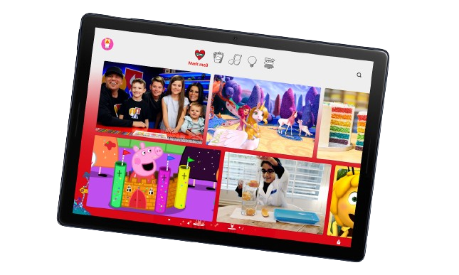

'Broadcast Yourself'
J'utilise souvent Youtube pour différentes choses que ça soit pour me divertir ou même pour apprendre certaines choses car cette appli se révele être très utile pour trouver un tutoriel sur n'importe quel sujet voici quelques exemples plus précis :
Une Abondance de Contenu :
YouTube offre une immense variété de contenus, des vidéos amusantes aux tutoriels pratiques, en passant par des documentaires fascinants. Peu importe vos intérêts, vous trouverez sûrement du contenu captivant sur YouTube.

Apprentissage et Développement Personnel :
YouTube est une mine de ressources pour l'apprentissage et le développement personnel. Que ce soit l'apprentissage de nouvelles compétences professionnelles, la cuisine, la méditation, ou même le dessin.
Divertissement Instantané :
Besoin de vous détendre et de vous divertir ? YouTube est là pour vous. Des vidéos drôles, des clips musicaux, des bandes-annonces de films, des sketchs comiques et bien plus encore vous attendent pour vous divertir à tout moment de la journée.
Création de Contenu :
YouTube offre également une plateforme pour les créateurs de contenu. Que vous soyez un musicien, un vlogueur, un gamer, un cuisinier passionné ou un artiste, YouTube vous permet de partager votre passion avec le monde entier et de vous connecter avec une audience mondiale.

En conclusion, YouTube est bien plus qu'une simple plateforme de vidéos en ligne. C'est une source infinie d'inspiration, d'apprentissage, de divertissement et de créativité. Que ce soit pour se détendre après une longue journée de travail, apprendre de nouvelles compétences, ou partager ses propres créations, YouTube est là pour répondre à tous vos besoins multimédias.